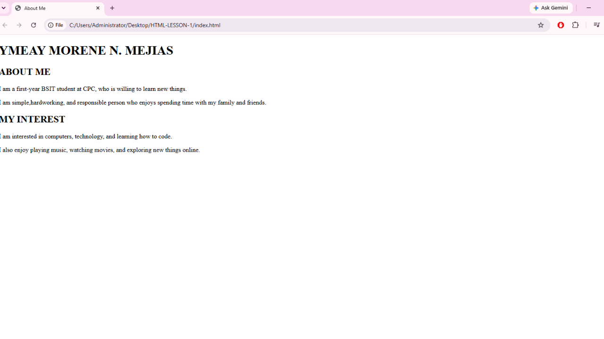
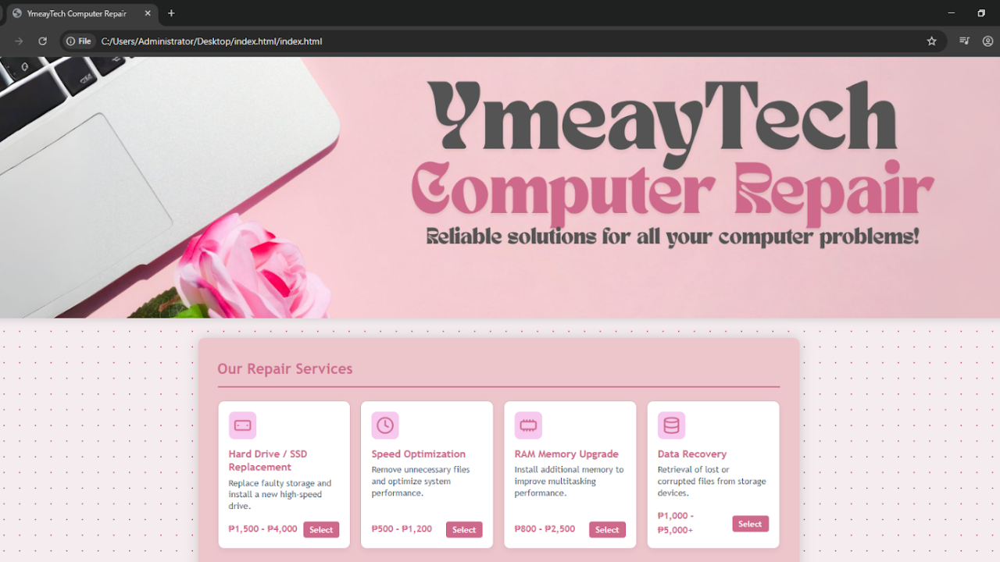
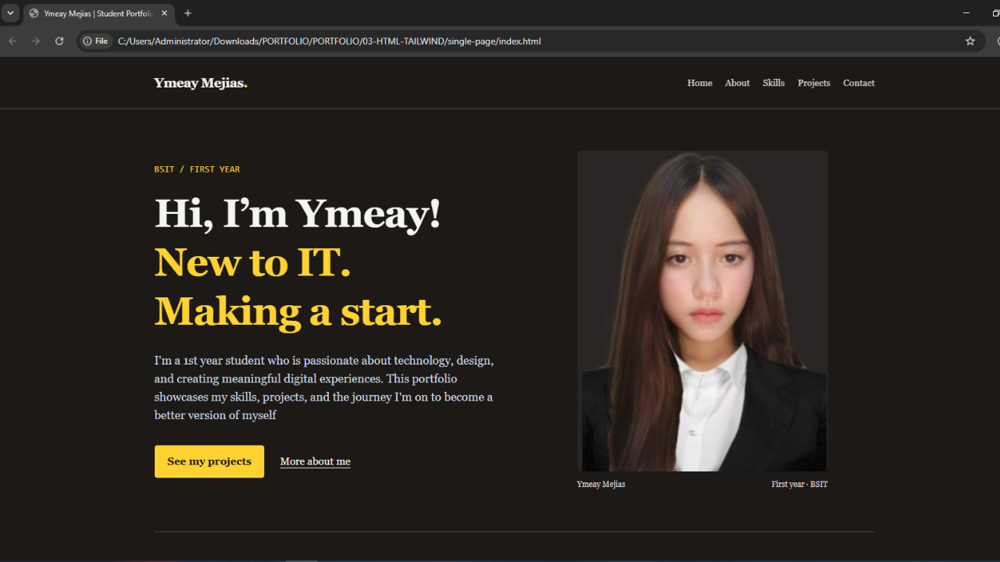

01 / WEB BASICS
HTML5
I use HTML to build the structure of a page, from headings and links to images and forms.
BSIT / FIRST YEAR
I'm a 1st year student who is passionate about technology, design, and creating meaningful digital experiences. This portfolio showcases my skills, projects, and the journey I'm on to become a better version of myself
ABOUT ME
I'm Ymeay Morene N. Mejias, a 1st year BSIT student from Cordova Public College. I'm interested in web development, graphic design, and technology. I enjoy learning new things and challenging myself to improve my skills.
Through school activities and personal projects, I've developed my creativity, teamwork, communication, and problem-solving abilities.
I am also eager to gain more experience, explore new ideas, and apply my knowledge to create meaningful and useful digital projects in the future.
This year, I want to build more websites, improve my graphic design skills, and keep growing as a developer and designer
WHAT I’M LEARNING
01 / WEB BASICS
I use HTML to build the structure of a page, from headings and links to images and forms.
02 / STYLING
I style pages with CSS, using Flexbox and grids to keep layouts neat on both laptop and phone screens.
03 / FAST STYLING
I use utility classes to set colors, spacing, and responsive layouts quickly while keeping my code easy to read.
04 / VISUAL DESIGN
I enjoy creating layouts, choosing colors, and matching fonts so that a page looks clean and organized.
MY PROJECTS
A few projects that show what I can do. Select an image preview to see each one.

01 / HTML
A simple personal webpage created using HTML. This project allowed me to practice basic web structure, headings, paragraphs, and organizing information into a functional webpage.
View image preview →
02 / HTML & CSS
Created a Computer Repair Service Request webpage using HTML and CSS. This activity helped me practice creating tables, forms, different input types,dropdowns, radio buttons, checkboxes, and buttons while improving my skills in designing a simple and user-friendly webpage.
View image preview →
03 / HTML & TAILWIND
A personal portfolio website designed to introduce myself, showcase my skills and experiences, and present my work. I focused on creating a clean and organized layout that represents me as a BSIT student.
View image preview →CONTACT
Whether you have a project idea, a design to share, or a question about web development, I’d love to hear from you. Send me an email and I’ll get back to you soon.
Reach me at
mejias.morene@gmail.comCebu City, Philippines
Cordova Public College · BSIT
Open to collaborations and new ideas.